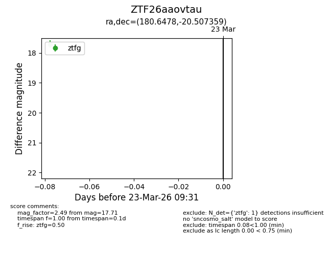
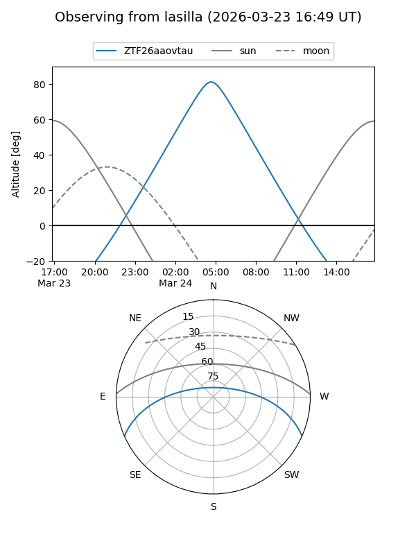
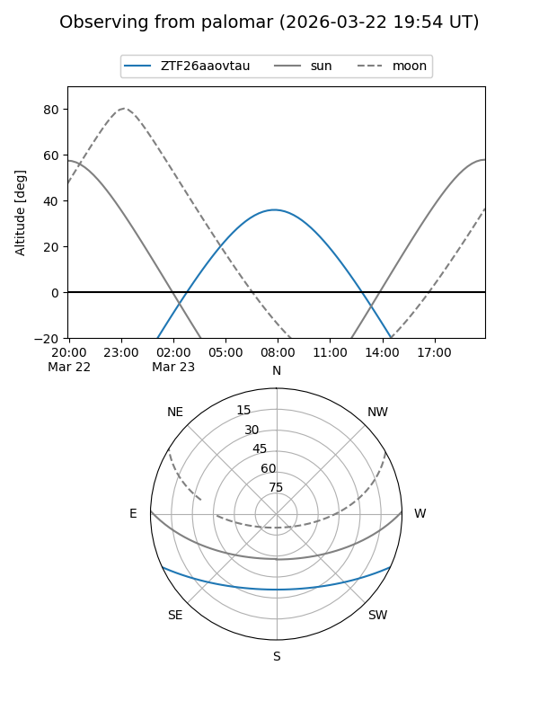

ZTF26aaovtau
Target ZTF26aaovtau at 2026-03-23 09:33
Aliases and brokers:
FINK: link
Lasair: link
ALeRCE: link
alt names
ZTF26aaovtau (ztf,fink_ztf)
Coordinates:
equatorial (ra, dec) = 180.6478,-20.50736
equatorial (HMS+DMS) = 12:02:35.47,-20:30:26.49
galactic (l, b) = (287.7321,+40.91824)
Flags:
Photometry:
last ztfg=17.71
1 ztfg detections
Lightcurve

Visibility


Additional plots